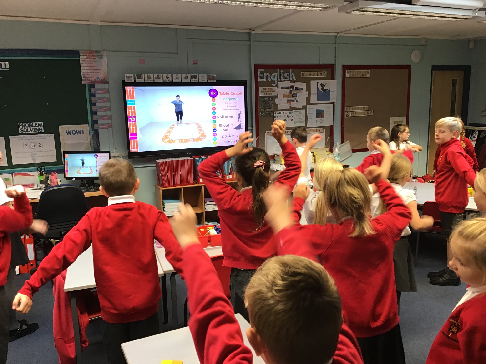

Jeffrey Bautista Numberfit Wordpress Task
Video
Video
Watch the video
- Videos are typical 12 minutes ideal for home learning or as a lesson starter
- Sessions are designed to work in small spaces; you don't need to move any furniture, learners can perform all exercises on the spot
